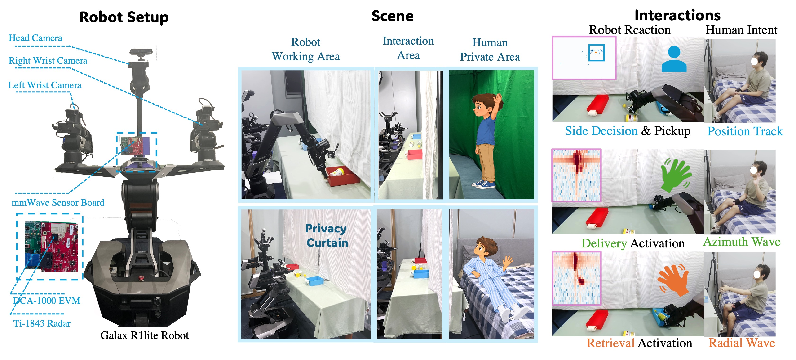
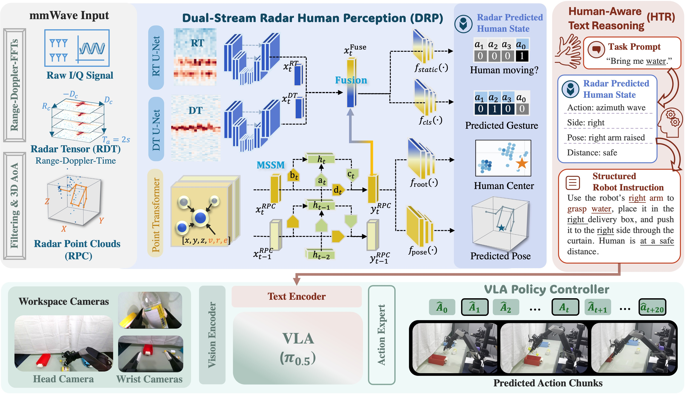
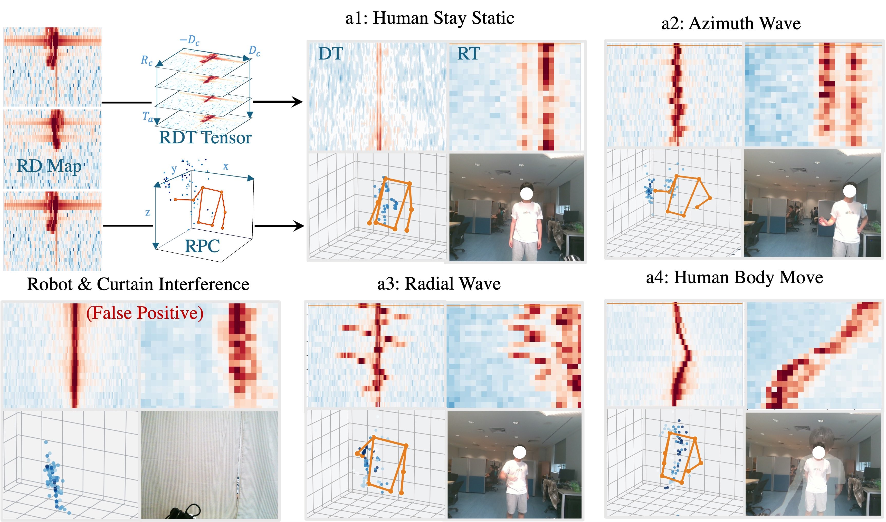
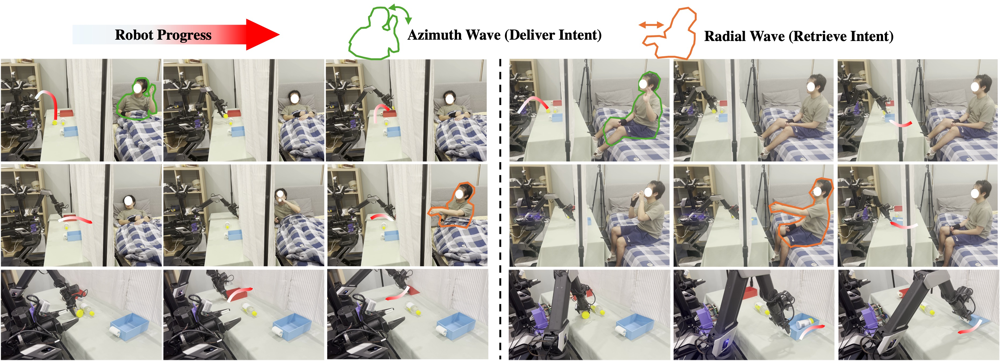
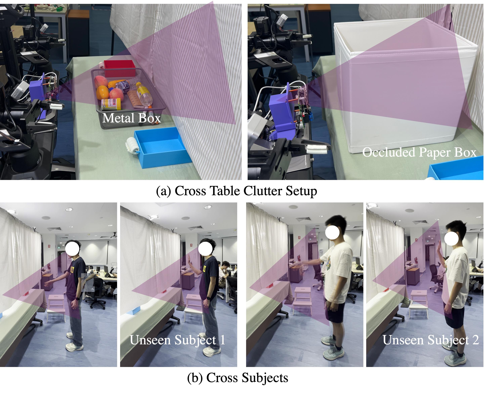

Dual-stream radar perception (DRP Fusion)
Raw radar tensors capture motion patterns, while radar point clouds preserve spatial structure for joint action and 3D pose estimation.
Under Review
1 School of Electrical and Electronic Engineering, Nanyang Technological University
2 School of Mechanical and Aerospace Engineering, Nanyang Technological University
3 The Hong Kong University of Science and Technology (Guangzhou)
4 School of AI and Robotics, Hunan University
† Corresponding authors: Gen Li, Jianfei Yang
Radar-guided, privacy-preserving human–robot interaction.
Assistive robots increasingly operate in many human-centered environments and perform various human-robot interaction (HRI) tasks, such as object delivery. However, most existing HRI systems rely on RGB cameras that continuously observe humans to respond to non-verbal commands, such as hand gestures. This raises privacy concerns in privacy-critical environments, such as hospital wards or restaurants, where direct camera observation of humans is restricted. To develop privacy-preserving HRI, we leverage millimeter-wave (mmWave) radar, which can sense human motion through privacy barriers without identifiable imagery. We propose mmHRI, the first multi-modal robot manipulation framework that achieves mmWave radar-guided privacy-preserving HRI. mmHRI introduces two key designs to mitigate the sparsity and temporal inconsistency of radar data in cluttered robot manipulation environments. First, we propose a dual-stream architecture that jointly learns from unfiltered raw radar tensors and radar point clouds to estimate both human actions and 3D poses. To mitigate signal inconsistency, mmHRI further incorporates a memory-based state-space model (MSSM) that retains historical radar features to reduce abrupt changes in pose/action. These estimated human states are then converted into structured textual robot instructions, which control a vision-language-action (VLA) policy for closed-loop robot manipulation and human-aware reactions. Our evaluation covers human action recognition and closed-loop delivery and retrieval. In the privacy-preserving curtain setting, mmHRI achieves 85.09% action-recognition accuracy, outperforming existing radar-based alternatives. Robot trials further demonstrate successful delivery and retrieval under visual occlusion, with stable task performance across unseen subjects, clutter configurations, and environments.
Cameras observe the robot workspace. mmWave radar senses human intent in the private area.

Left: Physical robot system setup and the mmWave sensing unit. Middle: Two privacy-preserving scenes, i.e., hospital ward and office. Right: Three gesture/pose based human-robot-interaction decision-making tasks. We show different radar signals that the robot may refer to for different reactions.
From complementary radar measurements to human-aware robot actions.

Overview of mmHRI. Radar measurements are first preprocessed into RDT tensors and RPC. The dual-stream radar human perception (DRP) then extracts motion and geometry patterns from both modalities, which are fused to jointly predict action and 3D poses. The human-aware text reasoning (HTR) then converts the estimated human states into structured robot instructions, controlling the downstream VLA policy for different actions.
Raw radar tensors capture motion patterns, while radar point clouds preserve spatial structure for joint action and 3D pose estimation.
Historical radar features reduce temporal inconsistency and abrupt changes in the estimated human state.
Human states become structured instructions that condition a vision-language-action policy for closed-loop manipulation.

Visualization of the complementary radar modalities used by the dual-stream model. The DT and RT maps preserve motion-sensitive Doppler patterns, whereas the RPC retains 3D spatial structure for pose and root estimation. Synchronized RGB images are shown for visual reference.
mmHRI achieves 85.09% action-recognition accuracy under privacy occlusion and 74.91% under cross-environment occlusion.
| Methods | HPE · Clear Visibility | HAR · Clear Visibility | HAR · Occlusion (Privacy) | HAR · Occlusion (Cross-Env) | ||||||||||
|---|---|---|---|---|---|---|---|---|---|---|---|---|---|---|
| MPJPE (cm) | TE (cm) | ACC (%) | FPR (%) | Static-F1 (%) | HPE Jitter | ACC (%) | FPR (%) | Static-F1 (%) | HPE Jitter | ACC (%) | FPR (%) | Static-F1 (%) | HPE Jitter | |
| RGB | ||||||||||||||
| RGB (YOLOv.) + AGCN | — | — | 96.02 | 4.55 | 97.06 | — | — | — | — | — | — | — | — | — |
| mmWave Radar | ||||||||||||||
| PointTrans. (RPC) + AGCN | 7.40 | 6.26 | 86.18 | 16.18 | 89.58 | 3.52 | 72.49 | 23.11 | 88.36 | 3.91 | 31.06 | 40.84 | 67.91 | 6.08 |
| RadHAR (RPC) | — | — | 87.06 | 11.95 | 77.11 | — | 62.18 | 26.09 | 82.50 | — | 27.61 | 33.10 | 61.81 | — |
| Waveman (RT) | — | — | 91.65 | 4.47 | 91.33 | — | 79.65 | 12.67 | 86.95 | — | 62.31 | 0.00 | 82.28 | — |
| Ours | ||||||||||||||
| mmHRI (Fusion) | 7.54 | 6.01 | 92.56 | 4.55 | 95.14 | 3.54 | 81.45 | 5.00 | 88.69 | 3.45 | 68.94 | 20.42 | 85.83 | 5.15 |
| mmHRI (Fusion + MSSM) | 4.25 | 3.12 | 96.51 | 1.38 | 97.25 | 2.83 | 85.09 | 9.90 | 90.17 | 3.25 | 74.91 | 11.27 | 86.09 | 4.42 |
ACC: accuracy. FPR: false-positive rate. HPE: human pose estimation. HAR: human action recognition. MPJPE: mean per-joint position error. TE: translation error. Jitter is reported in centimeters; — denotes an unreported or unavailable result.
Side decisions, object delivery, box retrieval, and collision avoidance under clear visibility and visual occlusion.
| Methods | Side Decision & Grasping | Object Delivery | Box Retrieval | Collision Avoidance | ||||||||
|---|---|---|---|---|---|---|---|---|---|---|---|---|
| PA | MA | Success | PA | MA | Success | PA | MA | Success | PA | MA | Success | |
| Clear Visibility | ||||||||||||
| RGB + π0.5 | 30/30 | 26/30 | 26/30 | 30/30 | 27/30 | 27/30 | 27/30 | 30/30 | 27/30 | 30/30 | 30/30 | 30/30 |
| mmWave + π0.5 | 30/30 | 26/30 | 29/30 | 26/30 | 29/30 | 29/30 | 30/30 | 30/30 | ||||
| Occlusion | ||||||||||||
| RGB + π0.5 | 0/30 | 26/30 | 0/30 | 0/30 | 27/30 | 0/30 | 0/30 | 30/30 | 0/30 | 0/30 | 30/30 | 0/30 |
| mmWave + π0.5 | 28/30 | 25/30 | 28/30 | 25/30 | 29/30 | 29/30 | 30/30 | 30/30 | ||||
| Occlusion (Cross-Environment) | ||||||||||||
| RGB + π0.5 | 0/30 | 23/30 | 0/30 | 0/30 | 26/30 | 0/30 | 0/30 | 28/30 | 0/30 | 0/30 | 30/30 | 0/30 |
| mmWave + π0.5 | 28/30 | 21/30 | 25/30 | 22/30 | 26/30 | 25/30 | 25/30 | 25/30 | ||||

Qualitative examples of the human states and corresponding robot operations. The columns show an azimuth wave, waiting, approaching, and a radial wave; the camera views show object grasping, tray delivery, and tray retrieval during the interaction.
Evaluating radar perception with unseen subjects and changes in tabletop clutter.
| Subject | Delivery Activation | Retrieve Activation | Collision Avoidance |
|---|---|---|---|
| Seen Subject | 28/30 | 29/30 | 30/30 |
| Unseen Subject 1 | 30/30 | 30/30 | 30/30 |
| Unseen Subject 2 | 27/30 | 26/30 | 30/30 |
| Clutter | Delivery Activation | Retrieve Activation | Collision Avoidance |
|---|---|---|---|
| No Additional Clutter | 28/30 | 29/30 | 30/30 |
| Metal Box | 28/30 | 26/30 | 30/30 |
| Tall Cup Box | 26/30 | 30/30 | 30/30 |

Real-world robustness evaluation setups. (a) Cross-table-clutter settings with a metal box and an occluding paper box. (b) Cross-subject settings with two unseen subjects.